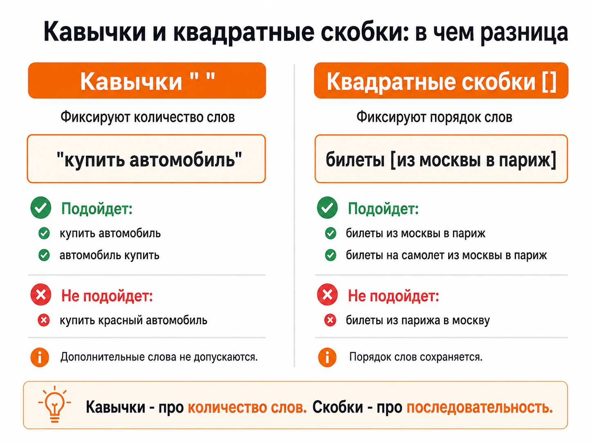

Блог о платном трафике
Операторы Яндекс Директ: как работают !, кавычки, квадратные скобки и другие символы
Операторы Яндекс Директ - это специальные символы, с помощью которых можно уточнить ключевую фразу: зафиксировать словоформу, количество или порядок слов, обязательный предлог либо исключить ненужные запросы.
Например, кавычки " " ограничивают количество слов, квадратные скобки [] фиксируют их порядок, а восклицательный знак ! закрепляет конкретную форму слова. В Директе операторы можно использовать в ключевых и минус-фразах, а часть из них работает и в Яндекс Вордстате.
Главное правило - не ставить операторы автоматически на все ключи. Каждый дополнительный символ сужает условия показа. Иногда это помогает отсечь нецелевой трафик, а иногда просто лишает кампанию полезного охвата. Сначала полезно разобраться, как работает Яндекс Директ в целом.
Таблица операторов Яндекс Директ
| Оператор | Что делает | Пример |
|---|---|---|
! | Фиксирует форму слова | купить !вазу |
+ | Делает стоп-слово обязательным | работа +на дому |
" " | Фиксирует количество слов | "купить автомобиль" |
[] | Фиксирует порядок слов | билеты [из москвы в париж] |
() и | | Позволяют перечислить варианты | купить (диван|кресло) |
- | Исключает слово или фразу | купить платье -б/у |
Без специальных символов ключевая фраза работает в более широком соответствии. Директ может учитывать различные словоформы, вложенные запросы, другой порядок слов, синонимы и похожие формулировки.

Восклицательный знак ! - фиксация словоформы
Оператор ! ставится непосредственно перед словом и фиксирует его форму: число, падеж или время.
Пример: купить !вазу. Такой ключ подходит под запрос купить вазу, но не должен срабатывать по другой форме этого слова, если она не соответствует указанной.
Другой характерный пример: купить билет в !москву. Подойдет запрос купить билет в москву, а купить билет в москве - нет.
Этот оператор особенно полезен там, где изменение формы слова меняет смысл запроса. Яндекс приводит похожий пример с !кия, позволяющий отделить автомобиль Kia от бильярдного кия.
Ставить восклицательный знак перед каждым словом ключа обычно нет смысла. Чем жестче вы фиксируете семантику, тем меньше вариантов запросов сможет охватить ключ.
Оператор кавычки " " - фиксация количества слов
Кавычки ограничивают ключевую фразу запросами без дополнительных слов. Например, "купить автомобиль" может показать рекламу по запросам купить автомобиль и автомобиль купить. Но запрос купить красный автомобиль уже содержит дополнительное слово и под действие такой ключевой фразы не подходит.
Порядок слов при использовании кавычек сам по себе не фиксируется. Это один из самых сильных способов сузить семантику, поэтому использовать кавычки на всех ключах подряд не стоит: целевые уточнения вроде цены, города, модели или характеристики товара будут отрезаны.
Кавычки полезны, когда вам действительно нужна конкретная фраза без расширений либо требуется отдельно протестировать очень узкую семантику.
Квадратные скобки [] - фиксация порядка слов
Квадратные скобки нужны, когда смысл зависит от того, в каком порядке расположены слова. Классический пример: билеты [из москвы в париж]. Запрос билеты из парижа в москву означает другое направление и не соответствует заданному порядку.
При этом квадратные скобки не фиксируют общее количество слов запроса. Дополнительные слова вне закрепленной последовательности могут присутствовать: для такого ключа допускается запрос билеты на самолет из москвы в париж.
Поэтому [] особенно полезны для направлений поездок, маршрутов, конструкций, где перестановка слов меняет смысл, и устойчивых словосочетаний.
Кавычки и квадратные скобки решают разные задачи: кавычки отвечают за количество слов, квадратные скобки - за их последовательность.

Плюс + - обязательные предлоги и другие стоп-слова
По умолчанию служебные слова могут обрабатываться иначе, чем смысловые. Оператор + позволяет явно указать, что конкретное стоп-слово должно присутствовать в запросе.
Пример: работа +на дому. Запрос работа по дому означает уже другое и под эту конструкцию не подходит. В конструкции крем +для бритья предлог тоже влияет на смысл: крем для бритья и крем после бритья - разные товары.
Сейчас Яндекс также умеет самостоятельно учитывать влияние стоп-слов на смысл фразы, поэтому фиксировать каждый предлог через + не требуется.
Минус - исключение ненужных запросов
Минус используется перед словом, по которому показы не нужны. Например, купить платье -б/у. Если магазин продает только новые вещи, это позволяет исключить запросы с б/у.
Минус-слова и минус-фразы особенно полезны после запуска рекламы, когда в отчете по поисковым запросам уже видно, какие реальные формулировки приводят нецелевой трафик. При настройке рекламной кампании лучше сначала смотреть фактические запросы пользователей, а затем добавлять осмысленные ограничения.
Огромный список минус-слов, собранный заранее без статистики кампании, тоже может случайно отрезать нужный спрос.
Круглые скобки () и вертикальная черта |
Эти символы удобно использовать вместе, когда нужно указать несколько вариантов внутри одной конструкции. Например, заказать еду (роллы|пицца) дает варианты заказать еду роллы и заказать еду пицца. Или: купить (пуховик|куртку).
Так можно компактнее работать с несколькими похожими вариантами ключевых фраз. Официальная справка определяет () и | как операторы группировки слов в сложных запросах.
Можно ли комбинировать операторы
Да. Например, конструкция [дома на !воде] одновременно контролирует последовательность слов и фиксирует нужную форму слова воде.
Но чем сложнее становится конструкция, тем внимательнее нужно проверять, какой трафик останется после всех ограничений. Не следует превращать каждый ключ в конструкцию вроде "[!купить +в !москве]" только потому, что технически существуют разные операторы. Цель оператора - решить конкретную проблему с соответствием запроса.
Кавычки или квадратные скобки - в чем разница
Если нужно ограничить количество слов, используются кавычки: "купить диван". Если нужно сохранить последовательность слов, используются квадратные скобки: [москва париж].
В первом случае порядок может изменяться, но дополнительные слова не допускаются. Во втором случае вокруг зафиксированной последовательности могут появляться дополнительные слова, зато сама последовательность сохраняется.
Где добавлять операторы в Яндекс Директе
Операторы вводятся непосредственно в поле с ключевыми фразами при создании или редактировании группы объявлений. Например, вместо доставка цветов москва можно записать доставка цветов !москва или применить другую конструкцию, если она действительно нужна вашей задаче.
Яндекс рекомендует тестировать такие ключевые фразы и по статистике оставлять варианты, которые дают подходящий результат. Подробнее о запуске - в статье как настроить рекламу в Яндекс Директ.
Операторы и автотаргетинг - важное отличие
Операторы относятся к ключевым фразам. Автотаргетинг работает по другому принципу: он не использует ключевые фразы, а анализирует объявление и страницу перехода, после чего самостоятельно определяет подходящие запросы и аудитории.
Если вы поставили кавычки или ! в ключевой фразе, это ограничивает соответствие именно этой ключевой фразы. Из этого не следует, что все показы кампании автоматически будут ограничены теми же условиями, если часть трафика получает автотаргетинг.
После запуска стоит смотреть отчет «Поисковые запросы» и отдельно обращать внимание на тип условия показа. В самом отчете Директ различает показы по ключевой фразе и по автотаргетингу.
Работают ли операторы в Яндекс Вордстате
Да, большинство операторов можно использовать и при подборе семантики в Яндекс Вордстате. Есть исключение: по актуальной справке Директа полный набор операторов работает на вкладках «По словам» и «По регионам», а в «Истории запросов» поддерживается только +.
Поэтому запрос в Вордстате без операторов и запрос с кавычками или фиксацией словоформы могут показывать разную картину спроса.
Когда операторы действительно нужны
- Словоформа меняет значение - используйте
!. - Критичен предлог - при необходимости ставьте
+. - Нужна фраза без дополнительных слов - используйте кавычки.
- Перестановка слов меняет смысл - используйте квадратные скобки.
- Нужно убрать нерелевантную тематику - добавляйте минус-слова.
- Нужно компактно перечислить варианты - используйте
()и|.
Если проблемы нет, лишний оператор обычно не нужен. В Директе сейчас большую роль играют алгоритмы, расширенное соответствие и автотаргетинг. Лучше использовать операторы точечно и затем проверять реальные поисковые запросы и конверсии.
Это часть системной работы с рекламой: посмотрите, что входит в настройку и ведение кампаний, а результаты разных запусков - в кейсах по Яндекс Директу.
Частые вопросы
Что означает восклицательный знак в Яндекс Директ?
! фиксирует конкретную форму слова. Например, !москву и !москве для Директа становятся разными условиями соответствия.
Что делают кавычки?
Кавычки фиксируют количество слов в запросе и не допускают дополнительных слов. Порядок при этом не фиксируется.
Что означают квадратные скобки?
[] фиксируют последовательность заключенных внутри них слов. Это удобно для маршрутов и других запросов, где порядок меняет смысл.
В чем разница между ! и кавычками?
! действует на конкретную словоформу. Кавычки ограничивают количество слов во всей фразе.
Можно ли использовать несколько операторов одновременно?
Да, операторы можно комбинировать, если это необходимо для конкретной семантики.
Нужно ли ставить операторы на все ключевые слова?
Нет. Они нужны только там, где обычное соответствие приводит к нежелательным запросам или требуется контролировать форму и порядок слов. Чрезмерное использование операторов может существенно ограничить охват.
Коротко
!- конкретная словоформа;+- обязательное стоп-слово;" "- фиксированное количество слов;[]- фиксированный порядок;()и|- варианты внутри одной конструкции;-- исключение ненужных слов.
Не пытайтесь сделать все ключевые фразы максимально точными. Хорошая настройка начинается с понимания, какой именно нецелевой трафик нужно убрать, а заканчивается анализом реальных запросов и конверсий после запуска.